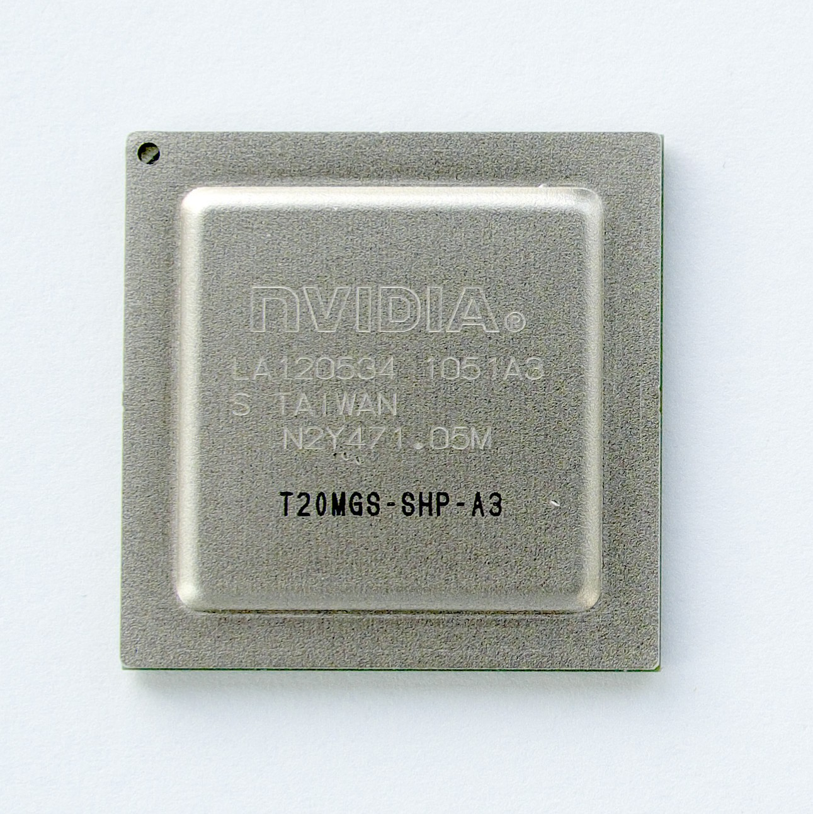

Nvidia Tegra 2 (tegra20)
|

NVIDIA T20 chip |
|
| Manufacturer | Nvidia |
|---|---|
| Name | Tegra 2 |
| Architecture | armv7 |
| CPU | 2x 1.0/1.2 GHz ARM Cortex-A9 |
| GPU | Nvidia ULP Geforce |
| Year | 2010 |
| Process | 40nm |
| Mainline | yes |
| Community Page | https://github.com/grate-driver |
| Components | |
| CPU |
Works
|
| UART |
Works
|
| Storage |
Works
|
| USB |
Works
|
| Display |
Works
|
| GPU |
Partial
|
| Pinctrl |
Works
|
| I²C |
Works
|
| Audio |
Works
|
| Video |
Works
|
| Thermal |
Works
|
| WiFi |
Unavailable
|
| Bluetooth |
Unavailable
|
| Modem |
Unavailable
|
| GPS |
Unavailable
|
| Camera |
Partial
|
| Suspend |
Works
|
{kind=link}
Development
Bootloader
Currently except classic proprietary Aboot (using fastboot service), there is open-source u-boot development in progress for some Tegra devices. You can check repository
Graphics
Components (source)
- Mesa-3D (minimal implementation, not complete enough (GL 1.4) to run XWayland (requires GL 2.1 or GLES2)
- xf86-video-tegra (2D acceleration for X11, EXA)
- libvdpau-tegra
Usability
Wayland:
- Phosh works, but UI is accelerated trough llvmpipe (software rendering), thus is slow.
- Plasma mobile not tested (please update)
X11:
- Xfce4 and Mate desktop will run on 2D acceleration.
-
Hildon requires an OpenGL backend.
-
As of cogl 1.22.2 the clutter/cogl backend requires stencil buffers (
EGL_STENCIL_SIZE). This not yet implemented in the grate-driver.
-
As of cogl 1.22.2 the clutter/cogl backend requires stencil buffers (
Video Decoding
Video Decoder Engine (VDE) was added to mainline kernel v4.16. The grate-driver includes hardware h264 decoding with libvdpau-tegra.
The vdpau driver does not support h264 videos encoded with:
- weighted prediction
- CABAC
Sample video that can be decoded with hardware acceleration: https://peach.blender.org/trailer-page/
$ mpv --hwdec=vdpau trailer_720p.mov
Using hardware decoding (vdpau).
VO: [vdpau] 1280x720 vdpau[yuv420p]
Participate development
Develop
Mesa3D Gallium driver
https://github.com/grate-driver/mesa
- Host1x ABI rework (required before mesa implemenetation): (G. docs)
- migrate from TGSI to NIR
- establishing demos that work, where can be seen regression
New Device Trees
To generate the correct RAM timings for new Tegra 3 devices from known kernel sources, you can start from the known (downstream) RAM model code, and generate valid timings using this tool by Ion Agorria: https://gitlab.com/IonAgorria/tegra-timings-generator .
The #postmarketOS-on-transformers:matrix.org chat room will also be an excellent starting point for the porting of any new Tegra 2/3/4 device, also outside strictly the ASUS Transformer series
Devices with a Tegra 2 Chipset
| Device | Mainline |
|---|---|
| Acer Iconia Tab A200 | P |
| Acer Iconia Tab A500 | Y |
| ASUS Eee Pad Transformer | Y |
| Motorola Droid X2 | |
| Samsung Captivate Glide | P |
| Samsung Galaxy Tab 10.1 | P |
See also
- Tegra 2's Cortex A9 implementation does not include ARM's SIMD extension, NEON. More info here
- Tegra 2 is very similiar to Nvidia_Tegra_3_(tegra30)